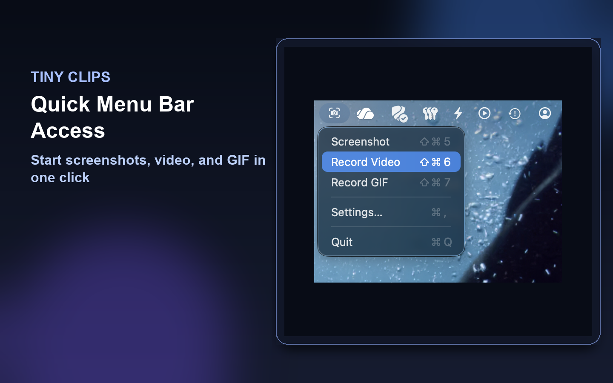
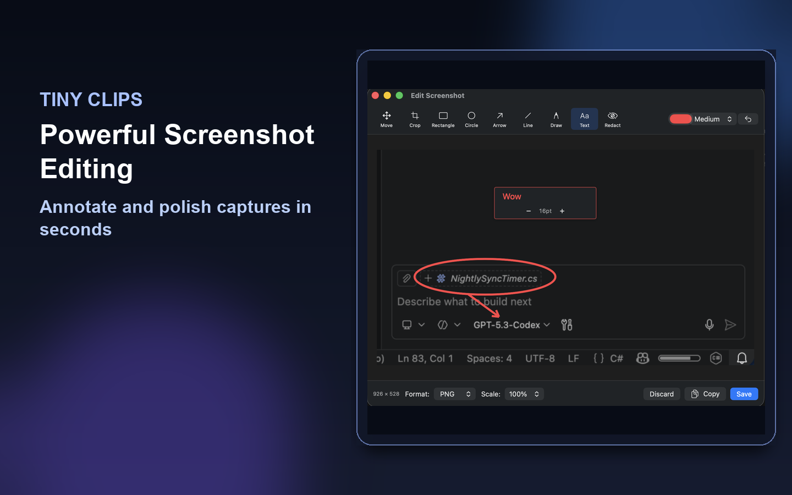
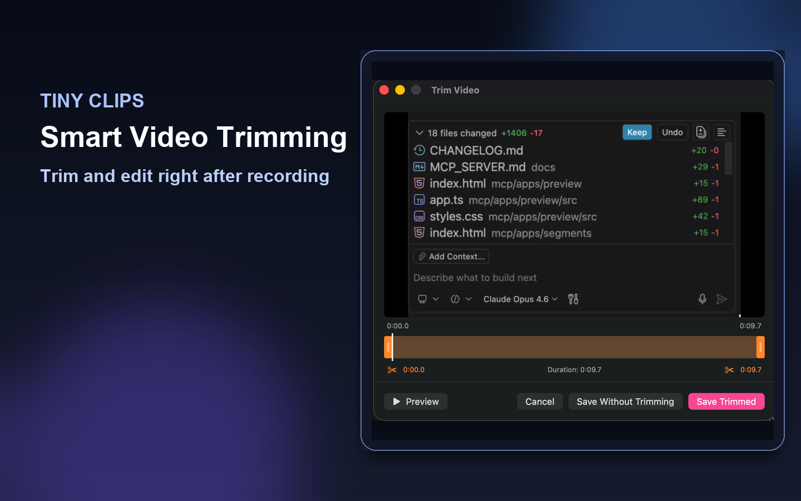
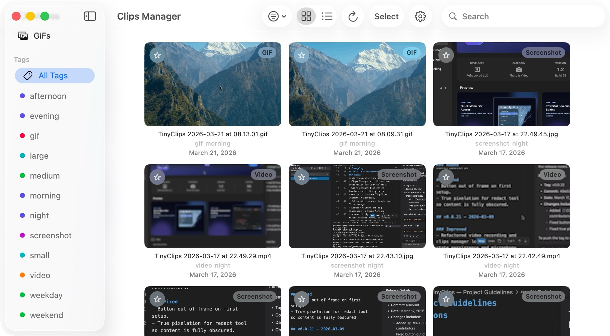

Recommended for most Mac users
Install from the Mac App Store
One-click install, automatic updates, and the full Clips Manager included for every Mac user.
Capture app for macOS and Windows
Tiny Clips lets you select any region and save PNG screenshots, MP4 recordings, or animated GIFs with editing, trimming, countdowns, webcam overlays, and Clips Manager included on Mac.
Free for everyone · macOS 15+ & Windows · under 5 MB
Start with the recommended option. Power-user installs stay close by when you need a reproducible setup or a direct build.
Recommended for most Mac users
One-click install, automatic updates, and the full Clips Manager included for every Mac user.
Use this for terminal-first workflows and reproducible setup.
brew tap jamesmontemagno/tiny-clips https://github.com/jamesmontemagno/tiny-clips
brew trust jamesmontemagno/tiny-clips 2>/dev/null || true
brew install --cask tiny-clips
Try pre-release builds through TestFlight, or download the latest signed build from GitHub Releases.
Recommended for Windows users
Use Windows Package Manager to install now and keep Tiny Clips up to date from the terminal.
winget install Refractored.TinyClips
winget upgrade Refractored.TinyClips
Package ID: Refractored.TinyClips
Use GitHub Releases when you want release notes, direct binaries, or an interactive install path.
View GitHub ReleasesTiny Clips stays out of the way until you need it, then gives screenshots, videos, and GIFs the few tools they need before leaving your desktop.
Select a region and save a PNG screenshot, MP4 recording, or animated GIF without opening a heavyweight suite.
Clean up the clip before it leaves your machine: trim motion, style screenshots, add context, and redact what should stay private.
On Mac, Clips Manager keeps every screenshot, video, and GIF organized without a paid unlock.
Watch how easy it is to capture, trim, and share your screen content.
A closer look at Tiny Clips on macOS and Windows.





Included free on macOS
No paid unlocks. Tiny Clips on macOS includes a full-featured library for every screenshot, video, and GIF you capture. Organize, edit, upload, and share — all without leaving the app.

Pick the platform you are on now. Tiny Clips stays small, fast, and close to the screen work you already do.
Mac App Store install with Clips Manager included.
Download on the App StoreInstall with winget or grab a direct build from GitHub Releases.
Install on Windows